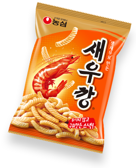
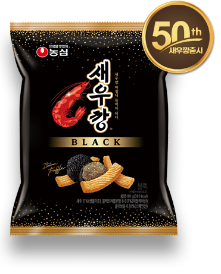
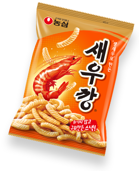
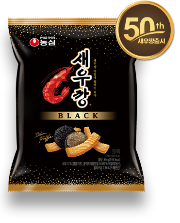
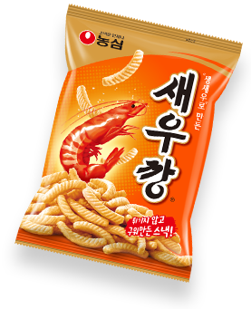
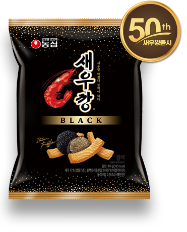

출시 50주년, 국민스낵 새우깡의 진화


한번 먹기 시작하면
끝없이 먹게 되는
새우깡!
태어나 처음 만나 평생토록 즐기는 새우깡!

농심이 설립된 1965년부터 1970년까지는 라면에 대한 소비자들의 인식이 부족하여 시장규모 자체가 매우 협소한 실정이었습니다. 더욱이 라면시장이 춘추전국시대처럼 나뉘어져 각사들간의 경쟁이 치열한 시기였으며, 1971년에는 농심의 연간 매출액이 현재의 일주일 매출액 수준인 203억에 불과할 정도로 판매가 부진했습니다.
보릿고개가 있던 1970년 당시, 소고기는 잔치 때나 명절에만 맛볼 수 있는 귀한 음식이었는데 농심은 국내 최초로 소고기라면을 개발해내 별식 중의 별식으로 큰 각광을 받았습니다. 이렇게 소고기라면이 큰 히트를 치면서 시세가 점점 호전되어가는 시점에서 새우깡 탄생의 서곡이 울려 퍼지게 됩니다
새우를 주원료로 결정한 농심은 최상의 맛과 품질을 찾기 위해 당시의 사세로 볼 때 혁명이라고 할 수 있을 만큼의 재료도 아낌없이 사용했습니다. 혁명은 물량뿐만 아니라 기술적인 면에서도 이루어졌는데 일반적으로 과자를 만들 때 기름에 튀겨내지만, 새우깡의 경우 가열된 소금의 열을 이용해 튀겨내는 파칭(Parching)법을 창안해 새우 함량에 따른 최적의 맛과 조직감을 창출해 냈습니다. 특히 일반 파칭과 달리 식물성 기름인 팜유를 뿌려준 상태에서 파칭하는 독특한 기술을 발전시켜 더욱 고소하면서도 짭짤한 맛을 창조해냈습니다.
개발부서 담당자들은 연구에 몰두하느라 밤늦게까지 일하는 것은 물론이고 밤을 새우는 일도 잦았고 기계 앞에 가마니를 깔고 잠을 자가면서 연구에 몰두했었죠.
새우깡을 개발하기 위해 사용된 밀가루 양이 4.5톤 트럭 80대분에 이르렀는데 1970년대 초의 경제상황을 감안할 때 그것은 엄청난 양이었습니다. 새우깡의 시제품을 만드는 과정에서 튀김온도가 적절치 않아 수도 없이 태우는 과정을 반복했고, 또 가장 먹기에 적당한 강도를 유지하기 위한 강도 실험만도 수백 번이나 시행되었습니다.

새우깡이라는 브랜드명 역시 사람들에게 친근하게 불리워졌습니다.
사실 새우깡이라는 브랜드명은 개발 당시 농심 신춘호 회장이, 어린 딸이 ‘아리랑’을 ‘아리깡 아리깡……’ 이라고 부르는 것에서 힌트를 얻어 새우와 깡을 결합하여 ‘새우깡’이라고 이름을 지었습니다. 이는 우리 민족 고유의 음식 이름 중 ‘깡밥, 깡보리밥’ 등이 순박한 이미지로 가슴에 와 닿았고 ‘뻥튀기’도 같은 의미로 해석되었습니다. 따라서 자연스레 ‘아리깡, 깡, 뻥’ 등의 이미지가 결합되면서 ‘새우+깡’이라는 단어가 떠올랐죠.
새우깡이 히트한 이후로도 농심의 스낵제품에 ‘깡’이라는 단어를 사용하여 ‘감자깡’, ‘고구마깡’, ‘양파깡’ 등의 제품을 출시했고 타사에서도 이를 원용하고 있어 ‘~깡` 하면 대다수의 국민들이 스낵을 연상할 정도에 이르렀습니다.
자꾸만 손이가는 새우깡! 그 매력적인 비밀

새우는 키토산을 많이 함유하고 있는 저칼로리 고단백질 식품으로 스태미너에 좋은 식품들로 알려져 있습니다. 칼슘 함량이 생선 이상으로 많을 뿐 아니라, 혈중 콜레스트롤치를 낮추는 타우린이 풍부하게 들어 있어 노화방지 및 체내 불순물 제거, 고혈압을 비롯한 각종 성인병 등에 탁월한 효과가 있습니다. 비타민이 풍부하여 어린이 성장발육은 물론 미용 효과에도 좋습니다.

새우는 키토산을 많이 함유하고 있는 저칼로리 고단백질 식품으로 스태미너에 좋은 식품들로 알려져 있습니다. 칼슘 함량이 생선 이상으로 많을 뿐 아니라, 혈중 콜레스트롤치를 낮추는 타우린이 풍부하게 들어 있어 노화방지 및 체내 불순물 제거, 고혈압을 비롯한 각종 성인병 등에 탁월한 효과가 있습니다. 비타민이 풍부하여 어린이 성장발육은 물론 미용 효과에도 좋습니다.
자꾸만 생각나는 멜로디 ~ 새우깡의 CM송 탄생 이야기
새우깡 출시 17년 즈음이었으니까 그럼 1988년인가. 새우깡에 대한 홍보를 더욱 강화하기 위해서 CM송을 새롭게 만들자는 의견이 모아졌습니다. 심심풀이 땅콩 같은 건데 무겁게 가면 안되고 당시 농심 선전실 사람들과 함께 아이디어를 주고 받았죠.
우리나라 광고 100년 동안 가장 히트한 CM송이 두 개가 있는데 하나는 새우깡이고 하나는 새우깡보다 먼저 나온 오란씨. 그럼 오란씨 CM송을 작곡한 사람이 누구냐. 윤형주씨였죠. 그래서 곡을 윤형주씨에게 맡기게 된거예요. 반응이 참 좋았어요. 그 노래의 쉬운 기초 언어만 가지고 구성해서 질리지가 않죠. 명곡 같아. 천하에 명곡 같아요. 들을 때마다 반가워요. 어릴 때 듣던 자장가, 동요를 부르던 느낌이지요.
1986년 신라면 런칭 때 농심과 처음 인연을 맺었습니다. 내가 참석한 두 번째 회의에선가 신회장님이 그랬어요. 신라면은 대단히 중요한 제품이다. 회장님이 중요하다고 하니까 더 머리가 굳어지는 거예요. 내가 그랬죠. 중요한 제품일수록 쉽게 가야 하지 않을까요. 맵다는 것을 재미있데 가보자. 사나이 대장부를 울릴 수 있는 라면? 사나이 대장부가 울긴 왜 울어, 맛있으면 그만이지. 두 달 이상 실랑이를 하던 광고였는데 단 두 번 만에 오케이를 하신 거예요. 그렇게 1986년부터 1994년까지 농심과 인연을 같이 해온 거예요.
1996년에 농심을 떠날 때 기념으로 받은 기념패예요. 다른 건 이사할 때 다 버렸지만 저건 안 버리고 잘 간직하잖아요. 농심이랑 정이 많이 들었는지... 광고철학 9단 신회장님께 오히려 참 많이 배웠어요. 내가 도움을 줬다기 보다는 장사의 기본 원리를 배운 계기가 되었다고 봐요. 참 보람을 느낀 시기였습니다.
1980년 후반부터 불려진 새우깡 CM송은 현재까지도 광고에 사용되고 있다. 자극적이지 않고 편안한 그 모습이 새우깡과 참 많이도 닮아있어 좋다. 무심결에 흥얼거렸는데 그게 벌써 10년, 20년 이라니... 그 오랜 시간을 같이 했던 사람들에겐 향수같이, 10대 학생들은 핸드폰 속 힙합버전 벨소리로 간직되어 있다.
1976년 인디안 밥부터 시작이었죠. 인디안 밥, 농심 라면, 고구마깡, 새우깡, 감자깡, 안성탕면, 너구리, 제주 삼다수까지 다 제 작품이에요. 농심 것만 해도 엄청나게 했어요. ‘형님먼저 아우먼저’를 만들 땐 시안이 51개가 들어갔는데 하나도 선택을 안 하셨어요.CM에 철학이 없다고 하셨답니다. 그 때 거기서 참 많이 배웠습니다. 지금까지 1,400여 곡의 CM송을 만들었는데 나의 광고 인생의 가장 중요한 부분은 농심입니다.그 옛날 농심 사무실 계단을 아직 기억해요. 좋은 사람들 많이 만났습니다. 내 26년 광고 인생이 농심의 역사와 함께 걸어온인생이에요. 어떻게 보면 내가 농심에 기여를 한 것도 있고 또 내 광고 인생에 있어서 좋은 명작들을 만들 수 있게 된 기회를주시기도 했으니까요.
일단 광고는 재미있어야 된다고 생각해요. 선율이든 내용이든, 강력한 소구를 위해서 사람들의 감성을 자극하면 때때로 사람들을 짜증나게 해요. 나는 이 노래를 10년 후에 들을 때 어떨까 하는 생각을 합니다. 내가 사랑하는 대상으로 그 제품을 설정하고 작품을 만듭니다.사랑하는 대상은 아이 손도 가고 어른 손도 가게 되죠. 사랑하는 대상으로 그 제품을 놓고 작업을 늘 했어요. 잘 된 내 작품을들을 때면 참 보람이에요. 수고와 아이디어, 창의력이 그 기업에 축복이 되었다면 그럼 나에게도 반가운 일이죠. 늘 방송 들을 때그런 생각이 들어요. 내가 고뇌했던 밤들, 잠 못 자고 작품을 만들던 그 밤이 존중 받는 기분이 듭니다. 새우깡은 스낵 업계의 장자라고 생각해요. 스낵의 맏아들.그때 저는 젊은 나이였는데 신회장님의 독특한 광고 철학을잘 이해했고 잘 적응했던 것 같아요.

한번 먹기 시작하면 끝없이 먹는 게 새우깡의 속성이니까 딱 맞는 거죠. 멜로디를 쉽게만 얹으면 되겠구나. 그 노래가 나오고 나서 매출이 1년도 안돼서 크게 증가했다는 이야기를 들었어요. 광고음악사에 기록되는 음악들이 몇 곡 있는데 새우깡, 롯데껌, 오란씨 다 제가 만들었네요.

남녀노소
모두 좋아하는
새우깡!

40년이 넘도록 변함없는 새우깡의 인기! 새우깡 포장 디자인을 한눈에~
새우깡의 얼굴인 패키지디자인은 역사와 시대에 맞추어 발전해 왔다. 새우깡만의 독특한 이미지와 신뢰감을 유지시키면서 항상 새로움을 잃지 않게 하는 것에 큰 중점이 있다고 할 수 있다.

새우의 기다란 수염을 연상시키는 로고타입과 빨간 새우 그림을 그려 넣었으며, 그물 모양의 패턴 안으로는 내용물이 훤히 들여다 보였다.(당시의 포장 기술은 그 정도의 수준이었다).
가장 혁신적인 디자인을 선보이게 되는데 , 1989년에 개발된 ‘원조 새우깡’이다. 당시 새우깡의 판매시장을 노린 타회사 모방제품이 많았기 때문에 ‘원조’란 이름을 붙였다. 이후 제품의 변질을 막기 위해 알루미늄 중착 재질이 도입되었고, 인쇄기술 향상으로 어색했던 새우 그림이 생생한 새우 사진으로 대체될 수 있었다. 이때부터 새우 산지인 '법성포' 등지에서의 새우잡이 사진과 생새우 사진을 넣기 시작했다.
후면용 사진을 촬영하기 위해 디자이너들이 직접 법성포에 가서 새우잡이를 하는 등 당시의 에피소드를 지금까지도 이야기하며 웃곤 한다.
새우깡은 다른 스낵 제품과도 비교할 수 없는 독보적인 오리지널리티(originality)를 확립하고 모던한 디자인 감각을 부여하는 데 주안점을 두고 변화해 왔다. 어머니가 갓난 아이에게 안심하고 줄 수 있는 새우깡의 그 절대적 신뢰는 1~2년 안에 쉽게 만들어질 수 있는 것이 아니다. 그동안 소비자들이 알게 모르게 조금씩 모습이 바뀌고 성장해온 새우깡은 앞으로도 새롭게 변화해갈 것이다.
잊을 수 없는 맛! 잊혀지지 않는 새우깡 광고
새우깡과 함께 한 사연을 올려주세요!
김순덕
전북 정읍시 덕천면
2004.03.08
김미성
광주광역시 북구 용봉동
2003.11.25
고흥준
경기도 군포시 산본1동
2003.10.25
강현진
서울시 도봉구 도봉1동
2003.09.25

이석례
충북 진천군 초평면
2003.08.25

이수경
경기도 오산시 청호동
2003.07.21

김재우
서울시 노원구 월계2동
2003.06.17

김숙자
경기도 시흥시 신천동
2003.05.12
이종호
경남 진해시 태평동
2003.03.21
새우깡과 함께 한 재미난 추억을 올려주세요!
새우깡과 함께하는 맛깔나는 이벤트! 함께 참여하세요!
더 새롭고 즐거운 이벤트로 돌아오겠습니다!